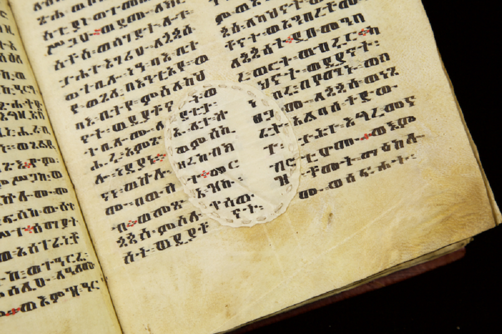

Inicio > Blog Bitácora de un bibliotecario > La forma de la memoria (10)
La forma de la memoria (10)
Un agujero más viejo que las palabras
El pergamino, la encuadernación y la elaboración de manuscritos en Etiopía
Este post forma parte de una serie que explora las múltiples formas en que las sociedades humanas han almacenado, transmitido y transformado la memoria a lo largo del tiempo, más allá de las historias restringidas centradas en los libros y la escritura. La serie aborda los archivos, los documentos y los sistemas de memoria como tecnologías históricamente situadas, moldeadas por relaciones de poder, condiciones materiales, ecologías y cosmovisiones culturales, y examina formas de transmisión frecuentemente excluidas de las narrativas dominantes sobre alfabetización y preservación: tradiciones orales, patrones tejidos, estructuras musicales, performances rituales, paisajes, cuerpos y otras infraestructuras vivas de la memoria.. Todas las entradas de esta serie pueden consultarse en el índice de esta sección.
El agujero en la página
En un salterio etíope del siglo XVI conservado en el Instituto de Estudios Etíopes de Adís Abeba, un agujero interrumpe la escritura del folio 46r. El copista escribió alrededor de la abertura y distribuyó el texto a ambos lados de la zona donde faltaba el pergamino.
El agujero ya estaba allí cuando se escribieron las palabras.
Shimels Ayele Yalew y sus colegas documentaron este ejemplo en un estudio de 2025 sobre la historia material de los manuscritos etíopes. Identificaron un caso similar en un manuscrito de homilías conservado en el monasterio de Däbrä Maryam, en el lago Tana, donde un copista dividió una palabra entre los dos lados de una abertura del pergamino. Otros manuscritos presentan pequeños agujeros que se dejaron intactos, aberturas mayores reparadas con puntadas y zonas dañadas reforzadas con fragmentos adicionales de piel.
Estas características forman parte de la historia de fabricación de los libros. Una hoja de pergamino no tenía que ser perfecta para recibir un texto. Era posible esquivar una abertura, coserla, cubrirla con un parche o adaptar la escritura a su presencia.
Los manuscritos que han llegado hasta nosotros permiten estudiar cómo los artesanos etíopes trabajaban con los materiales de que disponían. Sus encuadernaciones, superficies de escritura, reparaciones y otras características físicas conservan información que no puede recuperarse únicamente a partir de los textos.
La preparación de la superficie de escritura
El pergamino se elabora a partir de pieles de animales, que generalmente se limpian, raspan, estiran y dejan secar bajo tensión. A diferencia del cuero común, no se curte para obtener un material blando y flexible. La preparación produce una superficie adecuada para escribir, aunque las hojas resultantes conservan diferencias de grosor, textura y apariencia.
Las pieles también pueden presentar imperfecciones. Las heridas sufridas por los animales, los cortes producidos durante el desuello y los daños ocasionados por el raspado o el estiramiento pueden dejar agujeros. Algunos son lo suficientemente pequeños como para no requerir intervención alguna. Otros deben repararse para poder aprovechar la superficie circundante.
Yalew y sus colegas documentaron varios métodos de reparación empleados en los pergaminos etíopes. Algunas aberturas se cerraban con puntadas de punto corrido; otras recibían costuras en zigzag o fragmentos adicionales de pergamino. Un manuscrito genealógico conservado en el Instituto de Estudios Etíopes presenta una reparación en zigzag particularmente visible en el folio 134.
Las costuras podían realizarse antes de escribir, como parte de la preparación de la hoja. También podían efectuarse reparaciones similares posteriormente, cuando el manuscrito ya había sido utilizado o había sufrido algún daño. Para establecer su cronología es necesario examinar las evidencias materiales, incluida la relación entre el hilo, el pergamino y la escritura.
En el caso del salterio, catalogado como IES MS 76, la disposición de las palabras demuestra que el agujero ya existía antes de que se escribiera el texto. El copista no intentó ocultar la abertura, sino que adaptó la escritura a su presencia.
Estas decisiones materiales resultan más fáciles de comprender cuando se examinan las prácticas de elaboración de pergamino documentadas en Etiopía en tiempos recientes.
En julio de 2022, Amanuel Abrha y Hagos Gebremariam realizaron un trabajo de campo entre los copistas de Ləggat, una aldea del este de Tigray, en colaboración con Denis Nosnitsin, de la Universidad de Hamburgo. Su informe describe una comunidad cuyos integrantes poseían los conocimientos necesarios para preparar pergaminos, fabricar instrumentos de escritura, copiar manuscritos y encuadernar libros.
Los copistas utilizaban pieles de cabra, oveja y vaca. En general, preferían la piel de cabra por su calidad, mientras que las de vaca resultaban útiles para fabricar libros de mayor tamaño y estuches protectores. Las pieles se tensaban sobre bastidores y se trabajaban con instrumentos de raspado. Los investigadores documentaron los propios bastidores, las varillas de hierro empleadas para sujetar las pieles y las herramientas especializadas para tratar sus distintas superficies.
No todos los copistas preparaban la totalidad de sus materiales. Algunos compraban pergamino a proveedores, aunque conocían los procedimientos necesarios para elaborarlo.
Las prácticas registradas en Ləggat permiten observar de cerca el trabajo necesario para producir las superficies de escritura que encontramos en los códices etíopes históricos. No demuestran que todos los procedimientos fueran idénticos siglos atrás, pero ayudan a comprender las decisiones materiales y técnicas que intervenían en su fabricación.
La costura del libro
Una vez preparadas, las hojas de pergamino debían organizarse para formar un libro.
La mayoría de los manuscritos etíopes conservados son códices elaborados con hojas de pergamino plegadas y reunidas en cuadernillos. Una hoja doblada por la mitad produce dos folios y cuatro páginas. Varias hojas plegadas pueden colocarse unas dentro de otras para formar un cuadernillo, y los distintos cuadernillos se unen para constituir un volumen.
La encuadernación tradicional etíope utiliza un tipo particular de costura enlazada, conocida como costura de cadeneta. El hilo atraviesa los pliegues de los cuadernillos y los conecta a lo largo del lomo. En los ejemplos más característicos, las tapas de madera se sujetan mediante el mismo sistema de costura que mantiene unidos los cuadernillos.
Esta estructura difiere de numerosos métodos europeos de encuadernación, en los que los cuadernillos se cosen sobre soportes independientes que después se fijan a las tapas. Los artesanos etíopes desarrollaron soluciones prácticas para unir las hojas de pergamino y las tapas de madera en un códice funcional sin recurrir a esos soportes.
Un ejemplo conservado es el manuscrito W.850 del Walters Art Museum de Baltimore. Producido durante la primera mitad del siglo XVI y asociado con el monasterio de Gunda Gunde, en el norte de Etiopía, contiene los cuatro Evangelios en gəʿəz, la lengua litúrgica tradicional de la Iglesia ortodoxa etíope.
El manuscrito está profusamente ilustrado, con once miniaturas a página completa, seis tablas de cánones y elaboradas cabeceras decorativas. Conserva, además, su encuadernación original. Las tapas de madera están sujetas mediante una costura de cadeneta realizada en seis puntos. Ambas tapas están rotas y fueron unidas mediante costuras. En la tapa superior sobreviven restos de cuero.
Su estructura actual conserva, por tanto, evidencias tanto de su fabricación como de sus reparaciones. La costura original permite conocer cómo se ensambló el manuscrito; las tapas cosidas indican intervenciones posteriores, aunque la descripción disponible en el catálogo no permite establecer cuándo se realizaron.
Otro manuscrito etíope de los Evangelios conservado en el Walters, el W.836, fue copiado a comienzos del siglo XIV por un escriba llamado Mäṭre Krəstos. También tiene tapas de madera y costura de cadeneta, pero su encuadernación no es original. No puede suponerse que las tapas y costuras actuales reproduzcan exactamente la estructura que tenía el libro cuando se copió su texto.
Estos dos manuscritos ilustran una dificultad habitual en la historia del libro. Un manuscrito conservado puede contener materiales producidos en momentos diferentes. Sus páginas, costuras, tapas y reparaciones pueden corresponder a distintas etapas de la vida del objeto.
Esta cuestión resulta especialmente relevante al comparar códices históricos con ejemplos más recientes de encuadernación etíope. Pueden encontrarse técnicas similares en objetos separados por siglos, pero la historia material de cada manuscrito debe establecerse individualmente.
Plumas, tintas y trabajo de copia
Los copistas de Ləggat también ofrecen información particularmente detallada sobre las prácticas de escritura.
Sus plumas se fabricaban con cañas disponibles en la región. El copista recogía los tallos, los dejaba secar, los cortaba en secciones y les daba forma con un cuchillo afilado. Para escribir en negro y en rojo utilizaba plumas diferentes.
La tinta negra se preparaba con ingredientes locales. Los investigadores registraron un procedimiento en el que se empleaban cebada tostada, agua, hojas de plantas pulverizadas y una resina que actuaba como aglutinante. La mezcla resultante podía conservarse parcialmente seca, y se preparaban pequeñas cantidades de tinta según las necesidades de escritura.
La tinta roja siguió una evolución diferente. Mäbrahtom Dərar, uno de los copistas entrevistados, explicó que su abuelo sabía elaborarla a partir de plantas locales, pero que él ya no recordaba los ingredientes ni los procedimientos. Para la época del trabajo de campo, los copistas compraban tinta roja de fabricación industrial en los mercados cercanos, a veces añadiéndole resina de origen local para modificar sus propiedades.
Los conocimientos necesarios para fabricar libros no se transmitían, por tanto, sin modificaciones. Algunos métodos seguían siendo conocidos, mientras que otros se alteraban o abandonaban a medida que aparecían nuevas formas de obtener los materiales.
La copia de los textos exigía muchas horas de trabajo. Según el informe de Ləggat, los copistas producían habitualmente entre tres y seis páginas de tamaño mediano por día, con jornadas de ocho o nueve horas cuando era necesario. Después de copiar revisaban sus textos, corregían las omisiones y eliminaban los errores raspando el pergamino antes de escribir las letras o palabras correctas.
El pergamino permitía realizar estas intervenciones. A diferencia de lo que ocurre con muchas tintas sobre papeles modernos, en ocasiones era posible eliminar cuidadosamente la escritura raspando la superficie, lo que permitía corregir un error sin tener que desechar toda la hoja.
El libro iba tomando forma mediante sucesivas operaciones de preparación, escritura, revisión, corrección y ensamblaje.
Los copistas de Ləggat
La continuidad de esta tradición en el siglo XXI constituye uno de los aspectos más notables de la historia del libro en Etiopía.
La comunidad de fabricantes de manuscritos de Ləggat sitúa sus orígenes locales en el siglo XIX. Según los testimonios recogidos por los investigadores, un hombre llamado Wäldäqirqos aprendió el oficio de copista en Aksum durante el reinado del emperador Yohannes IV (1872-1889) y posteriormente estableció en su aldea natal un centro para enseñar la elaboración de manuscritos.
El oficio pasó de maestros a discípulos y entre integrantes de una misma familia.
Durante una visita de campo realizada en marzo de 2019, Denis Nosnitsin conoció al sacerdote Mäbrahtom Dərar Wäldäqirqos y pudo observarlo mientras trabajaba. Mäbrahtom había comenzado a aprender el oficio con su padre a los diez años. A los veinte ya era un copista experimentado.
Según su propio testimonio, había copiado al menos cien manuscritos y también sabía pintar miniaturas y motivos ornamentales. Los investigadores lo fotografiaron mientras copiaba un manuscrito de los Milagros de María destinado a la iglesia de Säglat Maryam. Utilizaba como modelo un manuscrito fechado en 1963 que había pertenecido a su padre, Dərar Wäldäqirqos.
Una fotografía muestra a Mäbrahtom escribiendo con el cuadernillo apoyado sobre las piernas. En otra aparece consultando el ejemplar que está copiando. En una tercera, introduce la pluma destinada a la escritura roja en un recipiente de tinta mientras sostiene entre los dientes la pluma que utiliza para escribir en negro. Estas imágenes conservan detalles del oficio que rara vez pueden reconstruirse a partir de los manuscritos medievales: la postura del cuerpo, el manejo de los instrumentos, la relación entre el ejemplar utilizado como modelo y la copia, y los pequeños movimientos que acompañan el trabajo.
En julio de 2022, los investigadores documentaron once copistas pertenecientes a la Asociación de Copistas de Ləggat. La aldea también mantenía una escuela donde los niños aprendían el oficio. Algunos aprendices recibían instrucción de sus padres; otros se formaban con copistas experimentados de la comunidad. La mayoría combinaba la producción de manuscritos con la agricultura y el servicio religioso. Trabajaban por encargo, en lugar de producir libros para un mercado general, y entre sus clientes había iglesias y comunidades etíopes del extranjero.
Los manuscritos que elaboraban formaban parte de una cultura religiosa y documental activa. Mucho después de que aparecieran las ediciones impresas, todavía se encargaban, copiaban, ilustraban, encuadernaban y utilizaban libros de pergamino.
Una tradición interrumpida
El trabajo de campo también registró las consecuencias de la guerra en Tigray. Según los copistas entrevistados, las tropas eritreas saquearon o destruyeron sus materiales entre noviembre de 2020 y junio de 2021. La iglesia de Ləggat Qirqos y su biblioteca de manuscritos también fueron saqueadas y sufrieron graves daños. Los encargos cesaron durante meses, lo que privó a los copistas de los ingresos que obtenían con su trabajo.
Algunos abandonaron la aldea. Dos miembros destacados de la comunidad fallecieron en diciembre de 2022, uno tras sufrir la escasez de asistencia médica y el otro en un accidente.
Los copistas que permanecieron en Ləggat esperaban reanudar la producción y la enseñanza. Entre las posibilidades que se discutieron figuraba la elaboración de nuevos ejemplares para sustituir los manuscritos que habían sido quemados o robados de las iglesias. El informe publicado no permite saber si esos planes llegaron a concretarse.
La interrupción afectó a mucho más que los manuscritos que ya se encontraban en la biblioteca de la aldea. Dañó las condiciones necesarias para producir nuevos libros: la disponibilidad de materiales, el trabajo de los artesanos experimentados, las relaciones con quienes encargaban los manuscritos y las oportunidades de formación.
La pérdida de libros y la interrupción de su producción son hechos relacionados, pero no equivalentes.
Las huellas de la fabricación
Los fabricantes de manuscritos de Ləggat y los códices etíopes históricos conservados en bibliotecas y museos ofrecen distintos tipos de testimonios.
Los manuscritos antiguos permiten estudiar estructuras físicas, reparaciones y rastros de trabajos realizados siglos atrás. La documentación de campo registra herramientas, técnicas, relaciones profesionales y actividades que resultan difíciles de reconstruir a partir de los objetos terminados. Ninguna de estas fuentes puede sustituir por completo a la otra.
Las tapas de madera de un evangeliario del siglo XVI conservan evidencias de una técnica particular de encuadernación. La fotografía de un copista que sostiene una pluma entre los dientes mientras utiliza otra muestra un detalle del proceso de escritura. Un aprendiz que recibe instrucción de su padre permite observar una de las formas en que los conocimientos necesarios para fabricar libros podían transmitirse entre generaciones. Y el agujero del salterio conservado en el Instituto de Estudios Etíopes registra una decisión tomada antes de que el manuscrito estuviera terminado.
Alguien preparó una hoja de pergamino que tenía una abertura. Alguien escribió a su alrededor. La hoja pasó a formar parte de un libro que sobrevivió durante siglos.
Las palabras pueden transcribirse, traducirse y reproducirse sin necesidad de conservar ese agujero. Pero la página original guarda las huellas del trabajo material que hizo posible escribirlas.
Bibliografía
- Amanuel Abrha, Hagos Gebremariam, y Denis Nosnitsin (2024). "Book-making Tradition at Ləggat, Gulo Mäkäda District." En After Ethio-SPaRe: Beta maṣāḥəft Field Research, Parte 2. Hamburg: University of Hamburg.
- Eagan, Jane. Bookbindings at Keble College: A Book Conservator's Vade Mecum. Oxford: Keble College.
- University of Hamburg. Codicology.
- Walters Art Museum. Ethiopian Gospels, manuscrito W.850 (siglo XVI) y W.836 (siglo XIV). Baltimore.
- Yalew, Shimels Ayele, Natalia Ortega Saez, Tim De Kock, Tigab Bezie Biks, Blen Taye, Ayenew Sileshi Demssie, y Abebe Dires Dinberu (2025). "Material History of Ethiopic Manuscripts: Original Repair, Damage, and Anthropogenic Impact." Arts, 14 (6), 173.